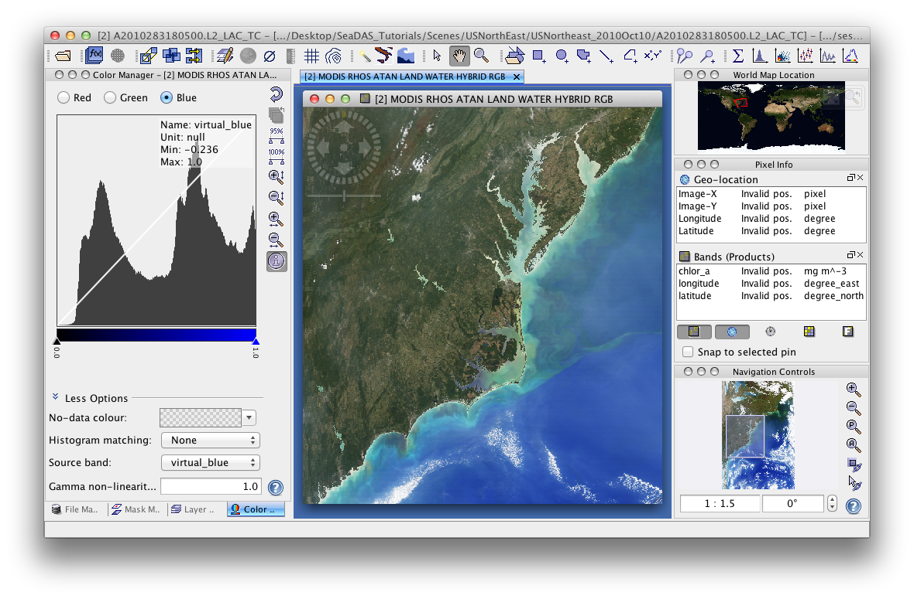
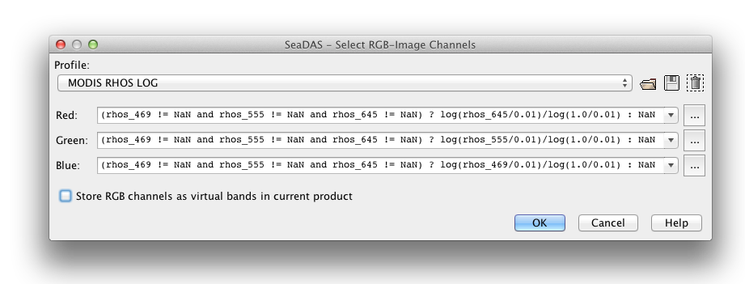

| RGB-Image Profile | |
|
View -> RGB Image |

The image above shows a rgb image created in SeaDAS.
When creating an RGB image, you are prompted with a window for loading and editing a RGB profile. A profile is a set of 3 algorithms for each band. These profiles can be saved out as text files and reloaded for future use.

The algorithm for each band may be edited by clicking on  which uses the Maths Expression Editor.
which uses the Maths Expression Editor.
As of release 7.2, many selectable RGB profiles have been added and are available by default for many missions. To achieve the intended results for these, you select the profile. Once loaded go to the Color Manager and toggle through the 'Red', 'Green', and 'Blue' setting windows setting the minimum (left-most arrow) to 0.0 and the maximum (right-most arrow) to 1.0. By default these minimums and maximums are set based on the statistics of the band.
The algorithms within a profile contain bands. They may even contain masks. A profile can only be loaded if the bands (and masks) are available with the current file. The profile file may found in ~/.seadas/beam-core/auxdata/rgb-profiles. The default profiles are based on the rhos bands. If you want to create a similar (copied) one, but based on a different band, say Lt, then you can copy this file and hand-edit it accordingly.
| Name | Type | Description |
|---|---|---|
| name | String | The name of the RGB-Profile, if given it is displayed instead of the file name. |
| internal | Boolean | The default value is false, if given and set to true it indicates that this RGB-Profile can not be deleted from the user interface (but does not prevent from overwriting the file). |
| red or r | String | The band maths expression used to create the red channel. This entry is mandatory. |
| green or g | String | The band maths expression used to create the green channel. This entry is mandatory. |
| blue or b | String | The band maths expression used to create the blue channel. This entry is mandatory. |